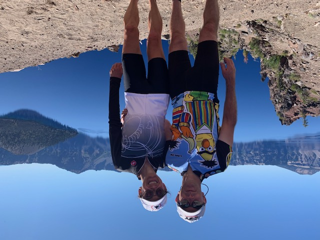

Paul Eppers
Hi! My name is Paul Eppers. If you couldn't tell, My wife and I are very sporty and like to bike together in order to spend time in the outdoors, keep fit, and not go crazy from being inside. Last year we biked much more in order to get ready for our vacation, Cycle Oregon. In September of 2019, we spent 7 days camping and biked 450 miles in Oregon with almost 2,000 other bikers from around the country and around the world.
Currently I am in process of learning data science, hoping to combine engineering and data science into a career. After spending over 10 years in industry I realized I really enjoy creating programs, my creative side, and working with data, my nerdy side. A few words of wisdom I have heard from my study as a Six Sigma Black Belt "If it is important enough to be a project, it is important enough to measure".